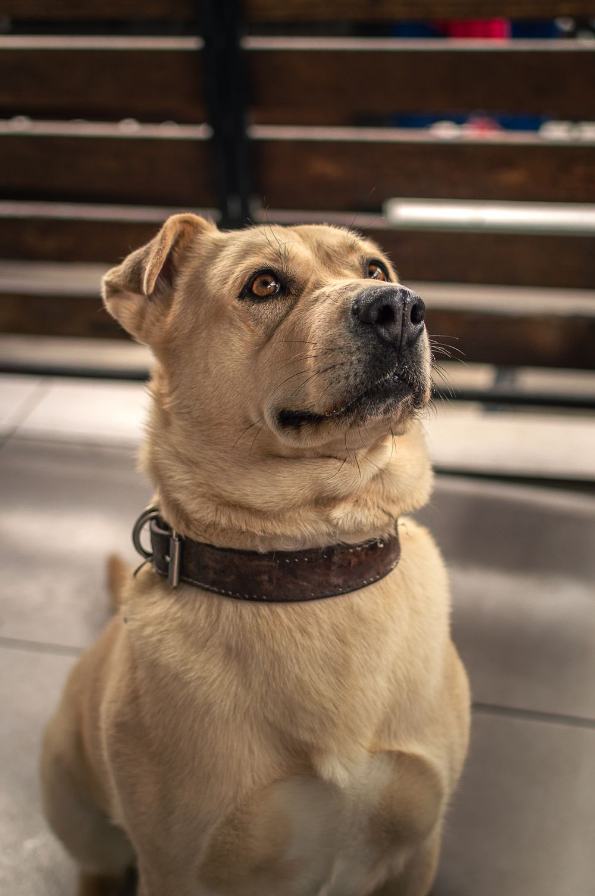

ELÄINTEN PUOLELLA
Pieni yhdistys.
Tilaa uusille aluille.
Tassula ry on vapaaehtoisvoimin toimiva eläinsuoja Seinäjoen lähellä. Autamme kotia etsiviä eläimiä ja tulevia omistajia löytämään toisensa.

MEILLE JOKAINEN ON YKSILÖ
Koti, jossa saa olla oma itsensä.
Eläimen luonne ja tarpeet ovat tutustumisen lähtökohta. Mieti, millaiseen arkeen eläin olisi tulossa: kuinka paljon sinulla on aikaa, millainen koti sinulla on ja keitä siihen kuuluu.
Eläimestä huolehtiminen on pitkä sitoumus. Myös hoitoon, ruokaan ja eläinlääkärikuluihin on hyvä varautua.
ENSIMMÄISESTÄ KYSYMYKSESTÄ OMAAN KOTIIN
Näin adoptio etenee
Tutustu eläimeen
Lue eläimen tarina ja pohdi, sopivatko sen tarpeet omaan arkeesi. Sinun ei tarvitse tietää kaikkea etukäteen.
Lähetä adoptiokysely
Kerro itsestäsi, kodistasi ja eläinkokemuksestasi. Kysely ei sido adoptioon. Tässä esimerkkiversiossa voit valmistella kyselyn, mutta sitä ei vielä lähetetä.
Tavataan ja jutellaan
Kun yhteydenottojen lähetys on käytössä, sovimme sopivan tutustumisajan yhdessä. Käymme läpi eläimen tarpeet ja vastaamme kysymyksiisi.
Yhteisen arjen alku
Jos koti ja eläin sopivat toisilleen, sovitaan adoption käytännöistä, sopimuksesta ja kotiutumisesta. Päätös tehdään rauhassa eläimen hyvinvointi edellä.